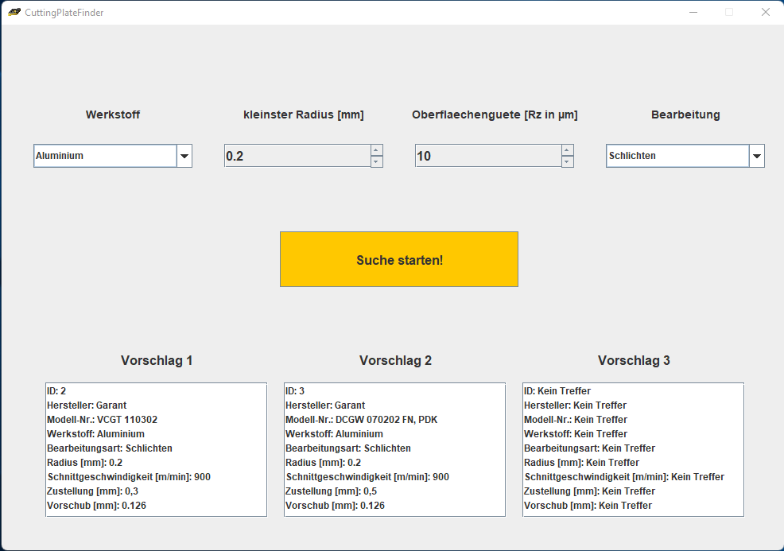

Benutzerhandbuch
Projekt: CuttingInsertFinder
Semester: SS 2022
Teammitglieder:
- Michel Schänzle (michel.schaenzle@hs-furtwangen.de)
- Vinzenz Dreher (vinzenz.dreher@hs-furtwangen.de)
- Robin Hofmann (robin.erhard.hofmann@hs-furtwangen.de)
- Leon Nopper (leon.nopper@hs-furtwangen.de)
- Ingo Steinert (ingo.michael.steinert@hs-furtwangen.de)
Einleitung:
Im folgenden wird die Verwendung des CuttingInsertFinders beschrieben, welcher Schneiplatten für verschiedene Anwendungen aus einer Datenbank filtert.
Beschreibung:
1. Starten der Anwendung per Doppelklick:
2. Dropdown-Menü über den Pfeil öffnen und den gewünschten Werkstoff auswählen.
3. Den gewünschten Schneidplatten-Radius auswählen über die Pfeiltasten.
4. Die gewünschte Oberflächengüte auswählen.
In der Datenbank sind optimale Vorschübe für die Schneidplatten hinterlegt. Wird mit dem hinterlegten Vorschub die Oberflächengüte nicht erreicht, errechnet der CuttingInsertFinder den erfordlichen Vorschub. Dieser wird in den Vorschlägen unter Vorschub angezeigt.
5. Das Dropdown-Menü der Bearbeitung öffnen und zwischen Schruppen und Schlichten auswählen.
6. Die Suche starten über den großen gelben Button.

Der CuttingInsertFinder gibt jetzt in den Vorschlägen die passenden Schneidplatten aus.
Werden zu wenig oder keine passenden Schneidplatten gefunden, wird "Kein Treffer" bei den einzelen Parametern ausgegeben. (Siehe Vorschlag 3)
